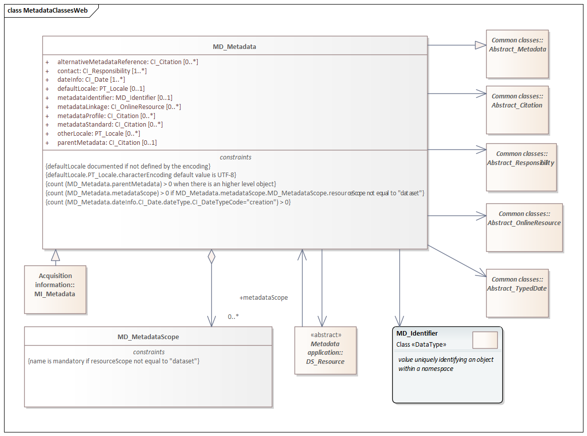
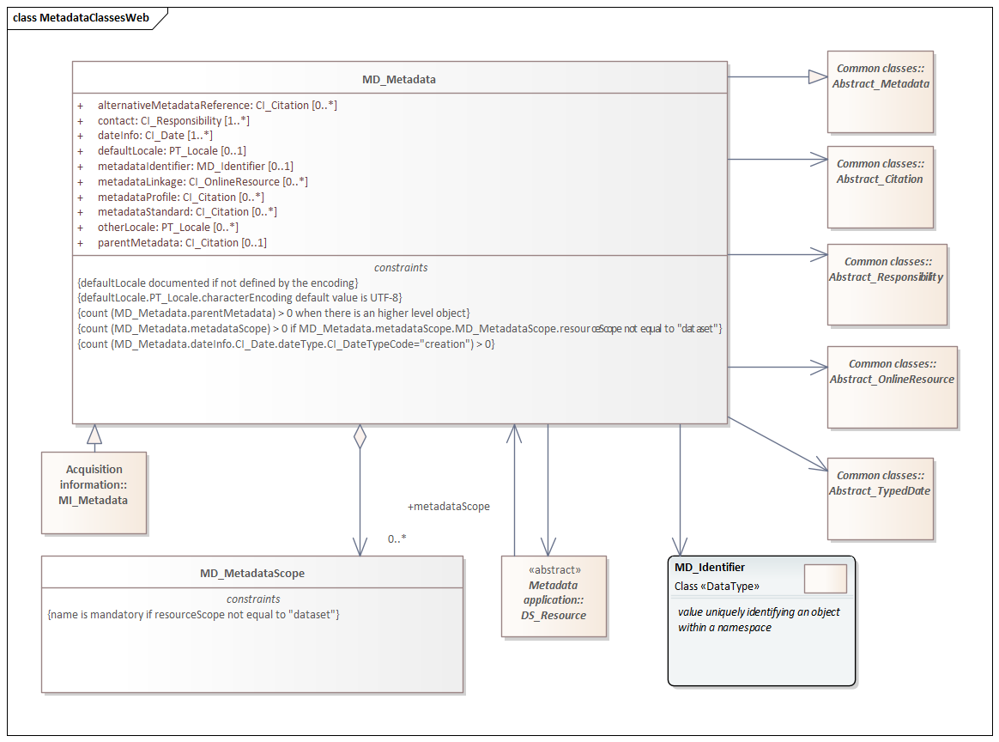

MDB 1.3 is an XML Schema implementation derived from ISO ISO 19115-1, Geographic Information - Metadata - Part 1: Fundamentals, Clause 6.5.2. It includes mandatory elements for describing resources that are not services. The XML schema was encoded using the rules described in ISO/TS 19139:2007.
The namespace URI for mdb 1.3 is https://schemas.isotc211.org/19115/-1/mdb/1.3.
mdb.xsd is the XML Schema document to be referenced by XML documents containing XML elements in the mdb 1.3 namespace or by XML Schema documents importing the mdb 1.3 namespace. This XML schema includes (indirectly) all the implemented concepts of the mdb namespace, but it does not contain the declaration of any types.
metadataBase.xsd implements the UML conceptual schema defined in ISO 19115-1, Geographic Information - Metadata - Part 1: Fundamentals, Clause 6.5.2. It was created using the encoding rules defined in ISO 19118, ISO 19139, and the implementation approach described in ISO 19115-3.
https://schemas.isotc211.org/19115/-1/mdb/1.3.0/metadataBase.xsd contains the folowing classes:| Name | Standard Prefix | Namespace Location | Schema Location |
|---|---|---|---|
| Citation and responsible party information Citation and responsible party information | cit | https://schemas.isotc211.org/19115/-1/cit/1.3 | ../../../../19115/-1/cit/1.3.0/cit.xsd |
| Data Quality Common Classes | dqc | https://schemas.isotc211.org/19157/-2/dqc/1.3 | ../../../../19157/-2/dqc/1.3.0/dqc.xsd |
| Geographic Common Objects | gco | https://schemas.isotc211.org/19103/-/gco/1.2 | ../../../../19103/-/gco/1.2/gco.xsd |
| Geospatial EXtent | gex | https://schemas.isotc211.org/19115/-1/gex/1.3 | ../../../../19115/-1/gex/1.3.0/gex.xsd |
| Language localization | lan | https://schemas.isotc211.org/19115/-1/lan/1.3 | ../../../../19115/-1/lan/1.3.0/lan.xsd |
| Metadata Common Classes | mcc | https://schemas.isotc211.org/19115/-1/mcc/1.3 | ../../../../19115/-1/mcc/1.3.0/mcc.xsd |
| Metadata COnstraints | mco | https://schemas.isotc211.org/19115/-1/mco/1.3 | ../../../../19115/-1/mco/1.3.0/mco.xsd |
| Metadata for Resource Identification | mri | https://schemas.isotc211.org/19115/-1/mri/1.3 | ../../../../19115/-1/mri/1.3.0/mri.xsd |
| Metadata Spatial Representation | msr | https://schemas.isotc211.org/19115/-1/msr/1.3 | ../../../../19115/-1/msr/1.3.0/msr.xsd |
| Metadata Reference System | mrs | https://schemas.isotc211.org/19115/-1/mrs/1.3 | ../../../../19115/-1/mrs/1.3.0/mrs.xsd |
| Metadata EXtension information | mex | https://schemas.isotc211.org/19115/-1/mex/1.3 | ../../../../19115/-1/mex/1.3.0/mex.xsd |
| Metadata Resource Content | mrc | https://schemas.isotc211.org/19115/-1/mrc/1.3 | ../../../../19115/-1/mrc/1.3.0/mrc.xsd |
| Metadata Resource Distribution | mrc | https://schemas.isotc211.org/19115/-1/mrd/1.3 | ../../../../19115/-1/mrd/1.3.0/mrd.xsd |
| Metadata Application Schemas | mas | https://schemas.isotc211.org/19115/-1/mas/1.3 | ../../../../19115/-1/mas/1.3.0/mas.xsd |
| Metadata Maintenance Information | mmi | https://schemas.isotc211.org/19115/-1/mmi/1.3 | ../../../../19115/-1/mmi/1.3.0/mmi.xsd |
| Metadata Resource Lineage | mrl | https://schemas.isotc211.org/19115/-1/mrl/1.3 | ../../../../19115/-1/mrl/1.3.0/mrl.xsd |
| Metadata ACquisition | mac | https://schemas.isotc211.org/19115/-2/mac/2.2 | ../../../../19115/-2/mac/2.2.0/mac.xsd |
Written by hand. Version: 2021-02-15